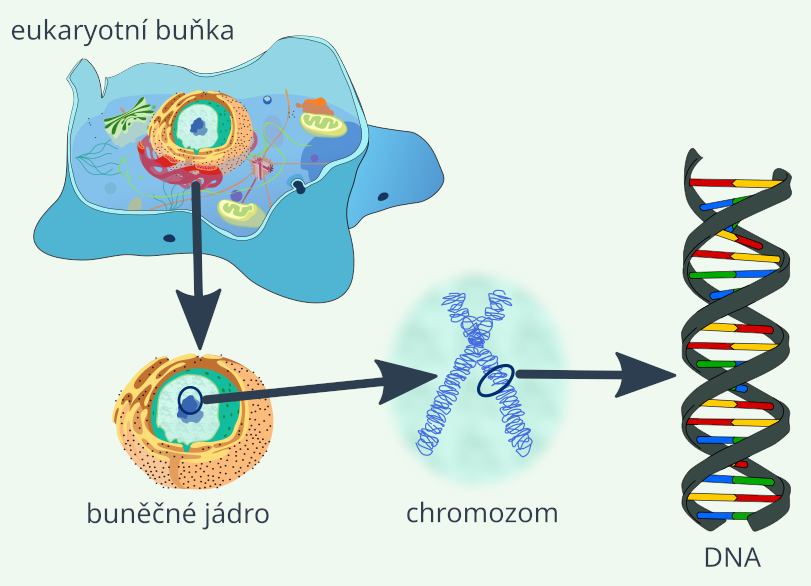
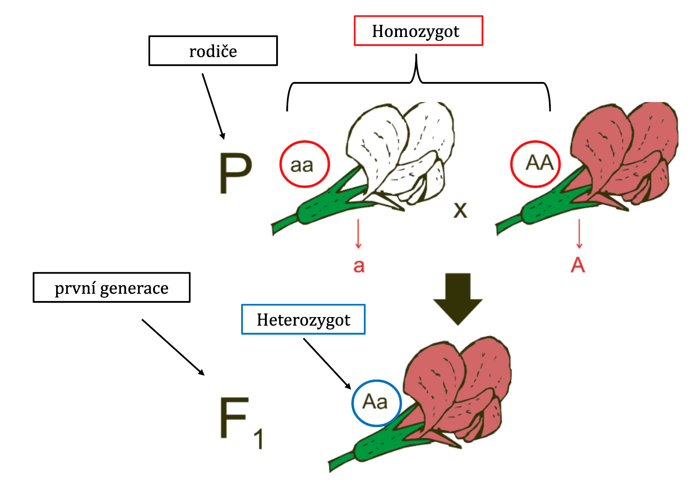
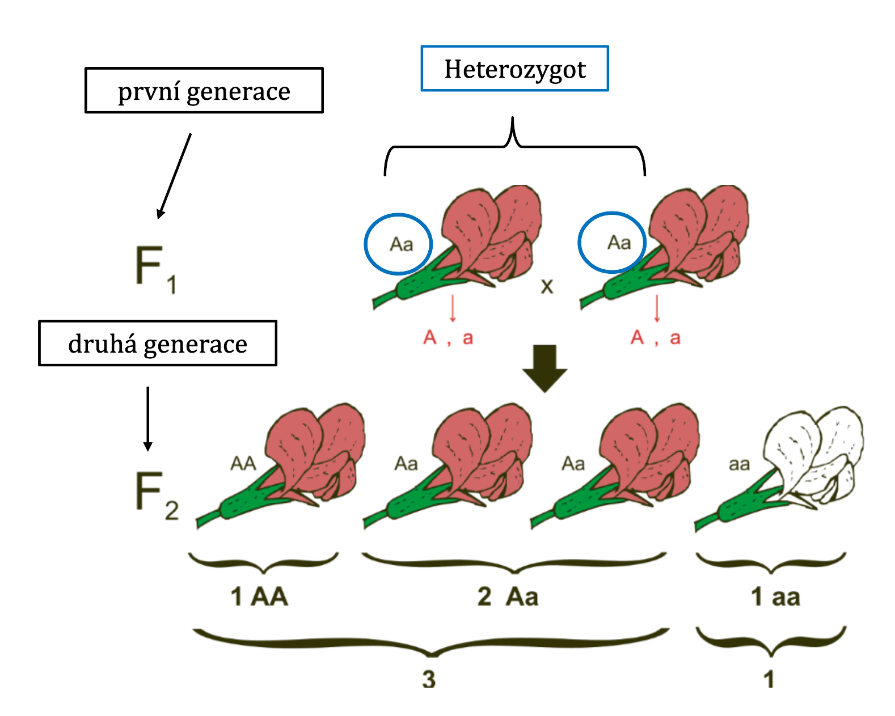
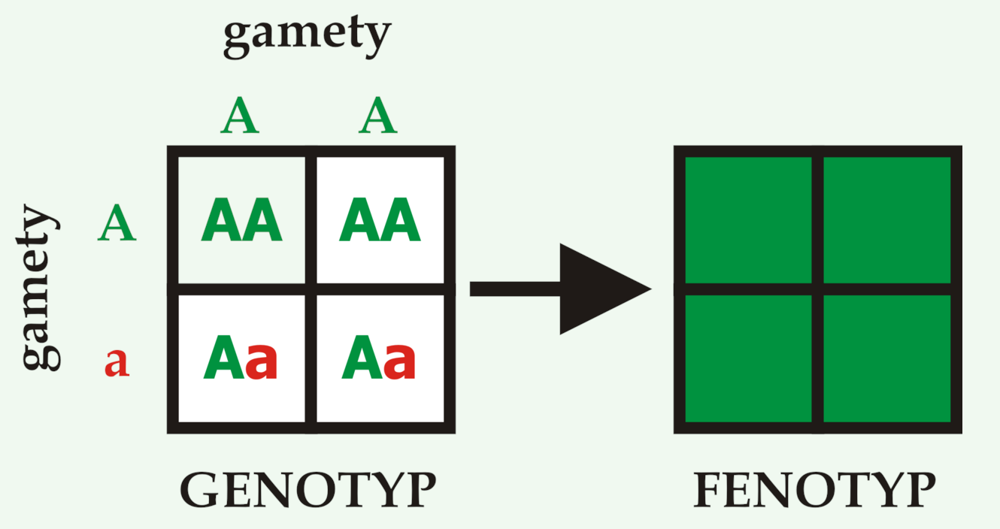
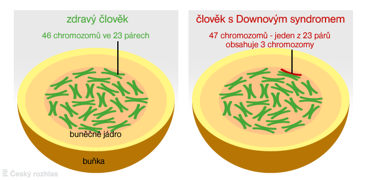

Genetika je biologická věda, která studuje dědičnost a proměnlivost organismů. Tyto dva zdánlivě protichůdné procesy tvoří neoddělitelnou dvojici, která určuje podobu a vývoj veškerého živého na Zemi. Podstata obou těchto jevů přímo souvisí se schopností organismů se rozmnožovat.
Dědičnost (heredita)
Dědičnost je schopnost organismů přenášet určité znaky, vlohy a schopnosti z generace na generaci. Postatou přenosu je skutečnost, že rodiče nepředávají potomkům přímo hotové znaky (např. barvu očí), ale vlohy pro tyto znaky. Tyto vlohy nazýváme geny. Dědičnost zajišťuje kontinuitu života. Umožňuje zachovat charakteristické vlastnosti daného organismu a zajišťuje tak pokračování konkrétního biologického druhu (zajišťuje, že z pšeničného zrna vyroste opět pšenice). Hlavním nosičem genetické informace je DNA (kyselina deoxyribonukleová), která je uložena v jádře buněk.
Proměnlivost (variabilita)
Proměnlivost je schopnost organismu měnit svoje vlastnosti. Způsobuje, že se potomci liší od svých rodičů i od sebe navzájem. Zajišťuje odlišnost jedinců v rámci jednoho biologického druhu. Proměnlivost umožňuje adaptaci (přizpůsobení) organismů na měnící se podmínky životního prostředí. Bez ní by druh při změně podmínek mohl snadno vyhynout.
Typy proměnlivosti
- Negenetická (nedědičná): Je způsobena vlivem vnějšího prostředí (např. nárůst svalové hmoty cvičením, opálení sluncem). Tyto změny se nepřenášejí na potomky.
- Genetická (dědičná): Je způsobena novým mícháním genů rodičů (rekombinací) nebo náhlými změnami v DNA (mutacemi). Tyto změny se na potomky přenášejí.
Spojení s evolucí a rozmnožováním
Dědičnost a proměnlivost jsou dva základní pilíře evoluce (dlouhodobého historického vývoje) organismů na Zemi.
Proměnlivost neustále vytváří nové varianty organismů. Některé z těchto variant jsou pro život v daném prostředí výhodnější. Proces přírodního výběru tyto úspěšné jedince vybere a díky dědičnosti se jejich výhodné vlastnosti přenesou do dalších generací.
Rozmnožování je klíčovým momentem, kdy se dědičnost a proměnlivost realizují. Při pohlavním rozmnožování dochází ke kombinaci genetické informace dvou rodičů, což dramaticky zvyšuje proměnlivost potomstva a dává evoluci nový materiál.
Proces rozmnožování a předávání vlastností z rodičů na potomky je na buněčné úrovni řízen specializovanými buňkami. U člověka a většiny živočichů hrají klíčovou roli pohlavní buňky.
Počet chromozomů v pohlavních buňkách
Běžné lidské tělesné buňky (např. buňky kůže, svalů či kostí) obsahují 46 chromozomů, které tvoří 23 párů. Jeden pár z nich jsou chromozomy pohlavní. Ženy mají pohlavní chromozomy XX, muži XY. Pohlavní buňky (tj. spermie u mužů a vajíčko u žen) obsahují pouze 23 chromozomů. Z každého původního páru chromozomů tělesné buňky se do pohlavní buňky dostane pouze jeden.
Žena předává vajíčkem vždy chromozom X. Muž předává spermií buď chromozom X, nebo Y. Spermie tedy rozhoduje o biologickém pohlaví budoucího potomka (kombinace XX znamená dívku, kombinace XY chlapce).
Původ genetické informace
Pohlavní buňky fungují jako biologické mosty mezi generacemi. Nesou v sobě záznam o celé rodové linii
DNA vajíčka je nositelem genetických informací od budoucí matky a jejích předků. DNA spermie je nositelem genetických informací od budoucího otce a jeho předků.
Lidská spermie i vajíčko obsahují pouze 23 chromozomů (poloviční sadu). Ve chvíli, kdy spermie pronikne do vajíčka, dochází k oplození – splynutí těchto dvou buněk. Spojením dvou sad o 23 chromozomech získává nově vzniklá buňka (zygota) kompletní sadu 46 chromozomů (23 párů). Tím je obnovena plnohodnotná genetická výbava typická pro lidský organismus.
Propletení DNA a přetisk informací
Splynutí buněk není jen prosté sečtení chromozomů. Na molekulární úrovni dochází k procesu „míchání“ vláken DNA: Chromozomy otce a matky se k sobě přiloží a jejich vlákna DNA se propletou. Během tohoto procesu (odborně nazývaného crossing-over) si odpovídající části chromozomů od otce a od matky vymění své kousky. Dochází k vzájemnému „přetisku“ a překombinování genetických informací.
Každý chromozom, který potomek získá, je jedinečným mixem, který nikdy předtím neexistoval.
Dědictví po generacích předků
Nový jedinec nezískává informace pouze o vlastnostech svých přímých rodičů. Protože rodiče dostali svou DNA od svých rodičů (prarodičů dítěte), přenáší se tato informace dále. DNA spermie a vajíčka v sobě nese genetickou paměť celé rodové linie.
Projevení skrytých znaků: U nového jedince se může vytvořit jakýkoliv znak, kterým disponovali rodiče, ale i jeho vzdálenější předci. To vysvětluje, proč dítě může mít barvu očí po babičce nebo talent po pradědečkovi, přestože jeho vlastní rodiče tyto znaky viditelně nemají.

Genetická výbava je organizována strukturovaně. Obrázek ukazuje tuto cestu od největšího k nejmenšímu:
- Eukaryotní buňka je základní stavební jednotka těl rostlin, živočichů, hub i člověka. Obsahuje specializované vnitřní struktury (organely). Ta nejdůležitější pro genetiku je uložena v jejím středu.
- Buněčné jádro je organela chráněná jadernou membránou. Funguje jako „řídicí centrum“ a „trezor“. Je to hlavní místo, kde je bezpečně uložena a chráněna téměř veškerá genetická informace organismu
- Chromozom je útvar připomínající tvar písmene X. Vzniká v jádře buňky tím, že se dlouhé vlákno genetické informace extrémně těsně namotá a zabalí (kondenzuje). Chromozom je v podstatě transportní balíček. Zajišťuje, aby se obrovské množství genetického materiálu při dělení buněk nepřetrhalo, nezamotalo a správně se rozdělilo.
- DNA (deoxyribonukleová kyselina) je základní stavební materiál chromozomů. Má tvar pravotočivé dvoušroubovice (připomíná kroucený provazový žebřík). Je to samotná molekula života. Jednotlivé příčky tohoto žebříku (barevné úseky na obrázku) tvoří chemické látky (báze), jejichž přesné pořadí funguje jako písmena v textu. Tento text je biologickým návodem na stavbu a fungování celého organismu.
Pro pochopení dědičnosti konkrétních vlastností (např. barva očí u lidí nebo barva květů u rostlin) je třeba si osvojit základní genetické názvosloví.
- Gen je základní jednotka dědičnosti a nositel genetické informace. Z chemického hlediska jde o konkrétní úsek vlákna DNA, který obsahuje přesný „návod“ pro tvorbu určité bílkoviny (proteinu) nebo molekul RNA (ribonukleové kyseliny, které slouží jako poslové a dělníci, kteří přepisují návod z DNA do podoby živých bílkovin). Proteiny následně určují vlastnosti organismu a řídí všechny jeho životní funkce.
- Alela je konkrétní forma nebo varianta genu. Gen je obecný předpis (např. „barva očí“), alela je konkrétní provedení (např. „hnědá barva očí“, „modrá barva očí“). Protože tělesná buňka (tj. jakákoliv nepohlavní) má dvě sady chromozomů (jeden chromozom od matky, druhý od otce), obsahuje každý genový pár vždy dvě alely.
- Lokus je konkrétní, přesně určené místo na chromozomu, kde se nachází určitý gen (např. gen pro barvu květu).
Dominantní vs. recesivní alely
Alely v genovém páru nemají vždy stejnou sílu. Rozlišujeme je pomocí písmen abecedy:
- Dominantní alela (značí se velkým písmenem – např. A) je „silnější“ alela. Pokud je v buňce přítomna, vždy se viditelně projeví na organismu (např. fialová barva květu).
- Recesivní alela (značí se malým písmenem – např. a) je „slabší“ alela. Často zůstává skrytá a projeví se pouze tehdy, když potomek nedostane od žádného z rodičů dominantní alelu (např. růžová barva květu).
Homozygot vs. heterozygot
Podle toho, jaké dvě alely od rodičů získáme, může být jedinec v daném znaku buď homozygotní, nebo heterozygotní:
-
Homozygot (AA nebo aa): Jedinec získal od obou rodičů stejnou formu genu (stejné alely):
- Dominantní homozygot (AA): Obě alely jsou dominantní.
- Recesivní homozygot (aa): Obě alely jsou recesivní (zde se konečně recesivní znak projeví).
- Heterozygot (Aa): Jedinec získal od každého rodiče jinou formu genu (různé alely – jednu dominantní a jednu recesivní). Příklad je uveden na obrázku: Heterozygot obsahuje jednu dominantní alelu (A) pro fialový květ a jednu recesivní alelu (a) pro růžový květ. Protože dominantní alela převládne, rostlina bude mít viditelně fialový květ, ale ve své genetické výbavě si nese skrytou informaci pro růžovou barvu, kterou může předat dál.
Kvalitativní znaky jsou vlastnosti, které se liší „kvalitou“ a organismus je buď má, nebo nemá (např. barva očí, tvar semen, krevní skupina). Tyto znaky jsou většinou kódovány jedním genem velkého účinku. Pravidla jejich dědičnosti objevil zakladatel genetiky Johann Gregor Mendel.
1. Mendelův zákon: Zákon uniformity hybridů (F1 generace)
Tento zákon říká, že při křížení dvou různých homozygotů (čistých linií) jsou všichni potomci první generace (F1) naprosto stejní (uniformní).
| ♂/♀ | A | A |
|---|---|---|
| a | Aa | Aa |
| a | Aa | Aa |
Příklad: Zkřížíme dominantního homozygota pro fialový květ (AA) a recesivního homozygota pro bílý květ (aa). Všichni potomci získají od jednoho rodiče alelu (A) a od druhého alelu (a). Všichni budou heterozygoti (Aa) a díky dominanci budou mít všichni fialové květy.

2. Mendelův zákon: Zákon o segregaci alel (F2 generace)
Tento zákon popisuje, co se stane, když mezi sebou zkřížíme dva heterozygoty (Aa x Aa) z předchozí generace. Při tvorbě pohlavních buněk se alely od sebe oddělují (segregují). V druhé generaci (F2) se v určitém poměru znovu objeví i původní recesivní znak (bílý květ), který byl v první generaci skrytý.
| ♂/♀ | A | a |
|---|---|---|
| A | AA | Aa |
| a | Aa | aa |
Štěpné poměry v F2 generaci při úplné dominanci (příklad na obrázku):
- Genotypový poměr (co mají v genech): 1 : 2 : 1 (jedna AA, dvě Aa, jedna aa)
- Fenotypový poměr (jak vypadají): 3 : 1 (tři květy fialové, jedna bílá).

3. Mendelův zákon: Zákon o volné kombinovatelnosti alel
Tento zákon platí v případě, že sledujeme dva nebo více znaků současně (např. barvu květu AND výšku rostliny).
Dědičnost jednoho znaku vůbec neovlivňuje dědičnost znaku druhého. Alely různých genů se do pohlavních buněk rozdělují nezávisle na sobě a mohou se volně kombinovat.
Příklad: Rostlina může mít kombinaci znaků fialový květ a vysoká postava, ale stejně tak fialový květ a nízká postava, bílý květ a vysoká postava atd.
Tento zákon platí ideálně tehdy, když se geny pro zkoumané znaky nacházejí na různých chromozomech.
Kromě genů, které jsou uloženy na běžných tělesných chromozomech (autozomy) existují znaky, jejichž dědičnost je vázána na pohlavní chromozomy (gonozomy), které označujeme písmeny X a Y.
Tyto chromozomy nesou primárně genetické informace, které určují biologické pohlaví organismu, ale mohou obsahovat i geny pro jiné tělesné vlastnosti nebo genetické vady.
Podstata určení pohlaví
Pohlaví většiny pokročilých organismů je dáno vzájemnou kombinací dvou gonozomů v buněčném jádře. V přírodě se vyvinuly různé systémy tohoto určení. Mezi dva hlavní patří typ savčí a typ ptačí.
Savčí typ (typ Drosophila)
Tento typ je v přírodě nejrozšířenější. Setkáme se s ním u savců (včetně člověka), plazů, obojživelníků, většiny hmyzu a některých dvoudomých rostlin.
Samice (XX) jsou homogametické. To znamená, že všechny jejich pohlavní buňky (vajíčka) obsahují vždy pouze chromozom X. Samci (XY) jsou heterogametické. Jejich pohlavní buňky (spermie) jsou dvojího druhu – polovina nese chromozom X a polovina chromozom Y. O pohlaví potomka rozhoduje tedy samčí spermie v momentě oplození.
Ptačí typ (typ Abraxas)
Tento typ funguje přesně obráceně než typ savčí. Vyskytuje se u ptáků, motýlů a některých druhů ryb.
Samice (XY) jsou zde ty heterogametické. Jejich vajíčka nesou buď chromozom X, nebo Y. Samci (XX) jsou homogametické a všechny jejich spermie obsahují pouze chromozom X. U ptačího typu o pohlaví potomka (např. zda se z vajíčka vylíhne kohout nebo slepice) rozhoduje samičí vajíčko.
V genetice je klíčové rozlišovat mezi tím, co má organismus zapsané ve své DNA a tím, jak skutečně vypadá a funguje. K tomu slouží dva základní pojmy: genotyp a fenotyp.

Genotyp
Genotyp je soubor všech genů (vloh) jedince, který dědíme po předcích. Je to kompletní biologický návod.
Počet genů určujících znak:
- Monogenní znak je určen pouze jedním genem (např. krevní skupiny).
- Polygenní znak je výsledkem spolupráce několika genů (např. výška člověka).
Genotyp je pevně dán v okamžiku oplození a během života se nemění.
Fenotyp
Fenotyp je souhrn všech znaků a vlastností jedince. Je to viditelný i neviditelný výsledek toho, jak se genetický program zrealizoval.
Zatímco genotyp se během života nemění, fenotyp se během života měnit může. Genotyp totiž neurčuje pevný znak, ale pouze rozsah možností, jak může znak vypadat. Konečnou podobu ovlivňuje prostředí (např. je možné mít geny pro vysokou postavu – genotyp, ale kvůli špatné výživě v dětství jedinec nevyroste – fenotyp).
Genealogie – studium rodokmenů v kontextu biologie je metoda, která slouží k sestavení lékařského rodokmenu a ke sledování konkrétního znaku (např. barvy očí, talentu nebo dědičné choroby) napříč několika generacemi jedné rodiny.
Pro přehlednost a srozumitelnost po celém světě se v genealogických schématech používá několik základních grafických symbolů:
Při přenosu genetické informace občas dochází k chybám. Každá taková trvalá změna v genetickém kódu se nazývá mutace. Mutace mohou mít pro organismus zásadní následky – od vzniku těžkých onemocnění až po nastartování nových evolučních změn.
Jak mutace vznikají
Většina mutací vzniká zcela náhodně jako přirozená chyba při kopírování (přetisku) DNA. Pravděpodobnost vzniku chyb však dramaticky zvyšují vnější vlivy okolního prostředí, které nazýváme mutageny. Rozlišujeme tři hlavní typy mutagenů:
- Fyzikálními faktory jsou například ultrafialové (UV) záření ze slunce nebo ionizující (rentgenové a radioaktivní) záření.
- Chemickými faktory jsou například cyklické uhlovodíky (obsažené v cigaretovém kouři, smogu či plastech) a jiné toxické látky.
- Biologickými faktory jsou například některé typy virových infekcí, které dokážou poškodit DNA hostitelské buňky.
Klasifikace mutací
Podle toho, jak velkou část genetické informace chyba zasáhne, dělíme mutace do tří základních skupin: genové, chromozomové a genomové mutace.
Genové mutace
Genové mutace probíhají na nejnižší úrovni – přímo v molekule DNA. Dochází při nich ke změně pořadí stavebních bloků DNA – nukleotidových párů (dvojice nukleotidů spojené vodíkovými vazbami).
Pozměněný gen může vytvořit úplně jiný protein (bílkovinu). Tento zmutovaný protein pak v dceřiné buňce funguje jinak – obvykle mnohem hůře, nebo vůbec.
Chromozomové mutace
Při chromozomových mutacích dochází ke strukturním změám na úrovni jednotlivých chromozomů (např. odtržení části chromozomu, jeho otočení nebo zdvojení úseku). Tyto rozsáhlejší změny bývají nejčastěji vyvolány působením vnějších mutagenů.
Genomové mutace
Genomové mutace se týkají celého genomu nebo jeho velkých částí (celých chromozomů).
Nejrozsáhlejší možnou změnou je znásobení chromozomové sady. Zatímco u některých kulturních rostlin je běžná, u člověka a vyšších živočichů není slučitelná se životem a vede k zániku zárodku.
Význam mutací v přírodě
Negativní význam: Pokud se projevují v klíčových genech, způsobují vážná onemocnění a vrozené vady jedince.
Pozitivní význam (v evoluci): Mutace jsou naprosto nezbytným mechanismem evoluce. Vytvářejí totiž zcela nové varianty genů (alely). Pokud je taková náhodná změna v daném prostředí výhodná, přírodní výběr ji podpoří a druh se posune ve vývoji dál.
Příklady genetických poruch u člověka
- Downův syndrom je genomová mutace způsobená přítomností třetí kopie 21. chromozomu (tzv. trizomie 21. chormozomu). Buňka takového člověka obsahuje celkem 47 chromozomů namísto běžných 46.
Osoby s tímto syndromem jsou téměř vždy tělesně a mentálně postiženy.

- Cystická fibróza je onemocnění postihující převážně dýchací a trávicí soustavu, kdy tělo produkuje hustý hlen poškozující orgány. Díky moderní medicíně (např. kauzální léčbě) se dnes výrazně zlepšuje kvalita života nemocných a prodlužuje jeho délka.
- Hemofilie je porucha srážlivosti krve vázaná na pohlavní chromozom X. Projevuje se chorobnou a těžko zastavitelnou krvácivostí i při drobných poraněních.
- Spinální svalová atrofie je vážné onemocnění, při kterém dochází k postupnému odumírání buněk míchy, což vede k ubývání svalstva a ztrátě schopnosti se pohybovat či samostatně dýchat.
- Albinismus je barevná odchylka způsobená poruchou tvorby tmavého pigmentu melaninu. Albíni mají typicky bílou až průhlednou kůži, velmi světlé vlasy, ochlupení a někdy i nebarevné (růžově či světle modře působící) duhovky očí.
- Polydaktylie je anatomická vrozená vada, která se navenek projevuje větším počtem prstů na rukou nebo na nohách, než je běžné.
Genové inženýrství se zabývá umělým vytvářením nových kombinací genů a jejich cíleným vkládáním do organismů, čímž mění jejich genetickou výbavu způsoby, které by v přírodě běžně nenastaly.
Organismus, do jehož genomu byla metodami genetického inženýrství cíleně vnesena cizí genetická informace, se nazývá geneticky modifikované organismy (GMO) neboli transgenní organismus.
Hlavní oblasti využití GMO
Bakterie s lidským genem dnes v obrovských laboratořích vyrábějí čistě lidské proteiny a hormony. Patří sem např. inzulin (pro diabetiky) nebo lidský růstový hormon. Vyrábí se tak i moderní vakcíny.
Plodiny GMO (např. rajče, kukuřice, sója) jsou díky vloženým genům odolné vůči škodlivému hmyzu, suchu nebo postřikům proti plevelu (herbicidům).
Geneticky upravené kvasinky a bakterie produkují enzymy pro prací prášky, čištění odpadních vod nebo výrobu biopaliv.
Genová terapie
Cílem genové terapie je léčit genetické nemoci přímo v těle pacienta tak, že se poškozený či nefunkční gen nahradí genem zdravým. Tímto způsobem se moderní medicína snaží natrvalo vyléčit nemoci, jako je cystická fibróza, hemofilie nebo některé formy vrozené slepoty.
Rizika a etické otázky
Přestože genové inženýrství přináší lidstvu obrovský užitek, je spřženo s řadou obav.
Existuje obava, že by se uměle vložený gen mohl křížením přenést z modifikované plodiny na divoce rostoucí plevel (např. vznik superplevele odolného vůči chemii).
Úpravy lidských embryí vyvolávají vážné morální diskuse o tom, kde leží hranice mezi léčbou těžkých nemocí a umělým „vylepšováním“ lidských vlastností (tzv. designování dětí).